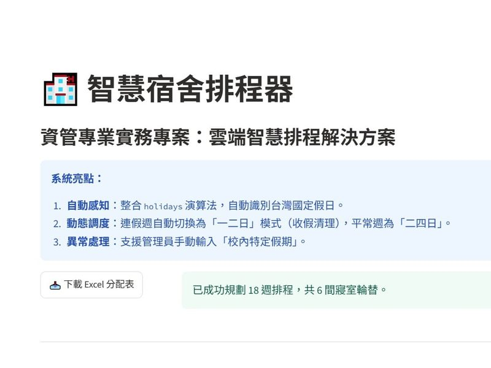

高靖雅
在探索中成長，在嘗試中成為自己
重視責任與自我成長，期待透過每一次學習與嘗試，成為更好的自己。
學校
中原大學
科系
資訊管理學系 二年級
所在地
台灣，桃園中壢
語言能力
中文（母語）、英文（中等）
個人特質Personal Traits
理性
有條理
好奇心強
興趣領域Interests
心理學與自我探索
AI 應用
理財與投資
個人優勢Strengths
邏輯分析
資訊統整
主動學習
自我反思
核心價值Core Values
責任感
持續學習
自我成長
專業技能 skills
85%
Excel 資料處理
85%
AI 工具應用
90%
資訊整理與分析
85%
電商平台操作
程式技能 coding
個人經歷 experience

智慧宿舍打掃排程系統
（Python 實務專案）
為了解決恩慈宿舍人工排班耗時又繁瑣的問題，我獨立設計並開發了一套雲端排班系統。利用 Python 自動判斷國定假日、調整打掃週次，並透過 Streamlit 製作操作介面，讓使用者可以快速完成排班，還能一鍵匯出整理好的 Excel 分配表。
透過這次專案，我不僅提升了程式應用能力，也學會如何運用程式解決生活中的實際問題。
北威顧問股份有限公司實習
（電商營運與 AI 應用）
暑假在北威顧問股份有限公司實習，主要負責從零開始建立蝦皮賣場，包含商品資料蒐集、照片拍攝、商品上架及文案撰寫。為了加速書籍商品資料的建檔，我也嘗試開發 Python 檢索腳本（ISBN-10/13 字串清理與書店檢索連結生成），並結合 AI 指令產出商品介紹與 Excel 整理資料。
透過這份工作，我累積了電商營運、AI 工具應用與程式輔助資料處理的實務經驗，暑假結束後亦持續留任參與相關工作。